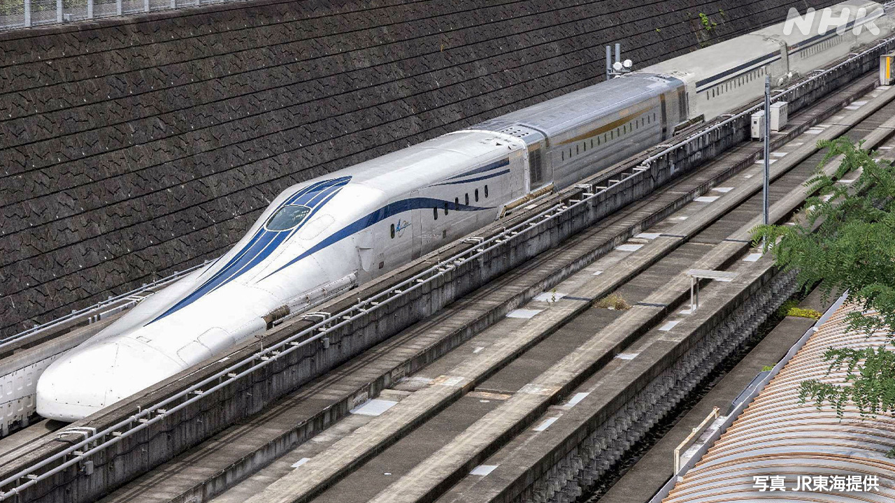
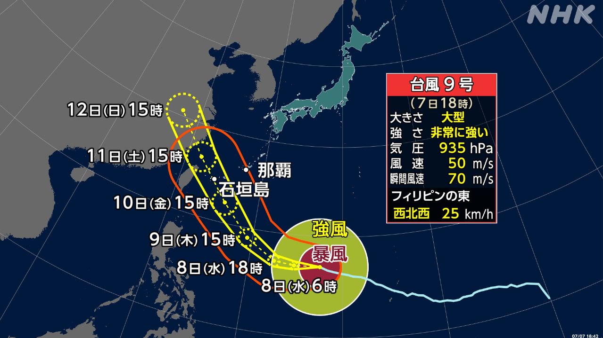
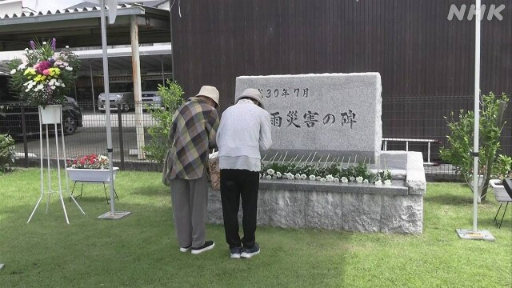

最新ニュース
1️⃣ リニア中央新幹線 静岡県で止まっていた工事が始まる

JR東海は、リニアモーターカーが東京と大阪の間を走る「リニア中央新幹線」を新しく作ろうとしています。
まず最初に東京から名古屋までを作ります。2つのまちを40分で走る計画です。
しかし、工事は静岡県で止まっています。静岡県の前の知事が、工事をすると川の水が少なくなるなどと言って反対したためです。
2年前に今の鈴木知事に代わってから、静岡県とJR東海は話し合いを続けてきました。
鈴木知事は7日、「山や川など自然を守るために、JR東海とルールを一緒に決めることにした」と言いました。
静岡県で止まっていた工事が始まることになります。
2️⃣ 気象庁 「沖縄の宮古島などでは台風の準備をしてほしい」

台風9号が、日本の南の海を西に進んでいます。
10日から11日ごろ、沖縄県の宮古島や石垣島の近くを通りそうです。
家が倒れるほどのとても強い風が吹く心配があります。たくさんの雨や高い波にも気をつけてください。
気象庁は、沖縄では7日と8日で台風の準備をするように言っています。
九州などでは7日、とても暑くなりました。福岡県と鹿児島県では35℃以上になった所がありました。
気象庁によると、今週の終わりごろまで日本のいろいろな所でとても暑くなりそうです。
熱中症にならないよう気をつけてください。
3️⃣ 雨の災害から8年 愛媛県で亡くなった人のために祈る

8年前の7月、中国地方や四国などで雨がたくさん降りました。山が崩れるなど大きい被害がでました。
愛媛県では33人が亡くなりました。
愛媛県宇和島市の公園には被害を伝える石碑があります。7日、まちの人たちが石碑の前に白い花を置いて、亡くなった人のために祈りました。
70歳ぐらいの女性は「妹の家族など3人が亡くなりました。助けることができなくて、残念です。8年前のことですが、今もずっと考えています」と話していました。
4️⃣ サッカーのワールドカップ アメリカが負けた
サッカーワールドカップのニュースです。
6日、決勝トーナメントの2回戦でアメリカとベルギーの試合がありました。
アメリカのバログン選手は、5日前の1回戦でレッドカードを受けていました。ルールでは、次の試合に出ることができません。
アメリカのトランプ大統領はFIFAの会長に電話して、もう一度考えてほしいと言いました。
FIFAは、バログン選手にルールを使うことを1年延ばすことにしました。
世界の多くの人が、特別な決定だったのではないかと言いました。
そして6日、バログン選手はベルギーとの試合に出ました。結果はアメリカが1-4で負けました。
- 〜ている / 〜でいる
- 〜としている
- 〜として
- 〜まで
- 〜から〜まで
- 〜ず / 〜ずに
- 〜から
- 〜ため
- 〜など
- 〜てから
- 〜前に
- 〜や〜など
- 〜ことにする
- 〜ため(に)
- 〜こと
- 〜になる
- 〜ことになる
- 〜ごろ
- 〜そうだ
- 〜ほど
- 〜がある / 〜がいる
- 〜ても / 〜でも
- 〜てください / 〜でください
- 〜ように
- 〜ところ
- 〜以上
- 〜によると
- 〜ならない
- 〜くらい / 〜ぐらい
- 〜ことができる
- 〜なくて
- 〜ではないか / 〜じゃないか
- 〜ので
vebaev.github.io
Generated: 2026-07-07 11:51:49 UTC